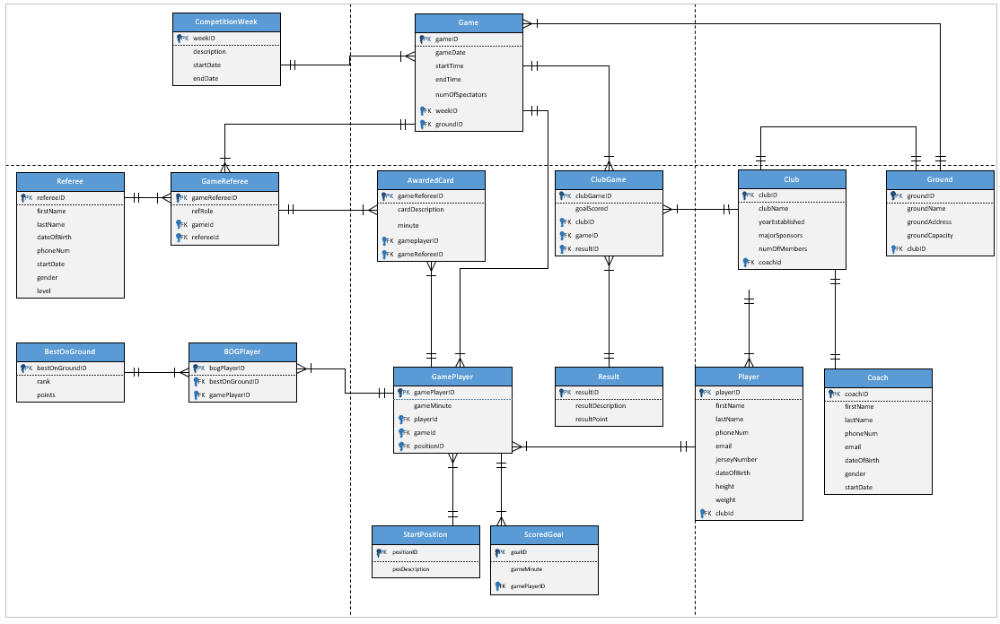

03 / Database design
A soccer competition, modelled properly
Clubs, players, games, referees, goals, cards and awards — turned into a normalised 16-table Oracle database with full DDL, sample data, and the analytical queries a competition organiser would actually run.

The problem
A soccer competition generates a surprising amount of interlocking data. Who played, who came on as a substitute and when, who scored, who was booked, who refereed, who won best on ground and by how many points. Model it carelessly and simple questions — "what's the ladder?" — become impossible to answer without duplicating data everywhere.
The design
The schema has 16 tables linked by 18 documented business rules. A central Game connects to clubs, players and referees through junction tables. From each player's appearance in a game, the model branches into goals, disciplinary cards, starting positions, and best-on-ground awards.
Substitutions are captured inside the player-appearance table using a game minute and a "Substitute" start position, rather than as a separate entity. That choice matters — see below.
What the queries answer
The analytical layer is the interesting part: joins, aggregation, subqueries, HAVING clauses and LEFT JOINs, each written to answer a question an organiser would genuinely ask.
-
01
Season ladder — total competition points per club, combining result points and best-on-ground points, with goals and home/away wins.
-
02
Club summary — each club's complete home and away win–loss–draw record.
-
03
Top goal scorers, and every individual goal by the leading scorer with opponent and ground — found using a HAVING subquery rather than a hardcoded name.
-
04
Goals per ground — average goals per game at each venue. A LEFT JOIN keeps goalless games in the denominator, which an inner join would have silently dropped and inflated every average.
-
05
Best-on-ground rankings with a breakdown of 3, 2 and 1-point awards, plus each club's away form.
Revised after feedback
The version in the repository is a corrected one. The original submission scored 74.85%, and rather than leave it there, I fixed what the marker identified:
- Removed the Substitution table. It created an unresolved many-to-many relationship — two foreign keys pointing into the same parent. Capturing substitutions inside the player-appearance record is the cleaner relational answer.
- Corrected two business rules. The club-to-ground relationship now describes training and ownership rather than where games are played, which is what the data actually represents.
- Added spectator numbers to the Game entity in the ERD and schema, instead of bolting it on with a later UPDATE.
These are the corrections that would have lifted the mark past 80%. Going back and making them is the part of the project I'd point to first.